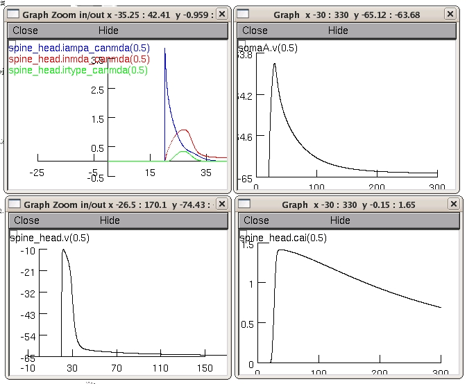

This readme file is for the model published in: Grunditz A, Holbro N, Tian L, Zuo Y and Oertner TG Spine neck plasticity controls postsynaptic calcium signals through electrical compartmentalization J Neuroscience (2008) 28: 13457-13466 This model was set up to dissect the relative contribution of different channels to the spine calcium transients measured at single spines. Our model spine is equipped with NMDA and AMPA receptors and R-type calium channels. Channel densities and spine neck resistance (Rneck) were adjusted to reproduce the relative amplitude of fluorescence transients measured in our pharmacological experiments How to run the model Under Windows: 1)download archive from ModelDB and expand the zip file 2) compile the mod files with mknrndll 3) start the program by double clicking the mosinit.hoc file then you will hopefully see a 4 graphs plotting: 1) the EPSP at the soma 2) the EPSP at the spine head 3) the concentration calcium (bound to dye molecules) in the spine head 4) the current though the three channels (AMPARs, NMDARs and R-type channels) similar to the simulations in figure 4 of the paper  Comments: Morphology of our CA1 pyramidal cell: we used the multi-compartment model of a CA1 pyramidal cell from the NEURON database published in Golding NL, Kath WL, Spruston N Dichotomy of action-potential backpropagation in CA1 pyramidal neuron dendrites J Neurophysiol (2001) 86: 2998-3010. The model was simplified by removing all active conductances from the soma and dendrites. We set membrane time constant (tm) to 28 ms, giving Rm = 28 kOcm2 and Cm = 1uF/cm2. An intracellular resistivity of Ri = 150 Ocm , and a membrane resting potential of Vrest = -65 mV were used. Three types of channels were implemented in the spine compartment, namely NMDA, AMPA, and R-type voltage gated calcium channels. The voltage-dependent R-type calcium conductance was simulated using Hodgkin-Huxley like equation adapted from Foehring RC, Mermelstein PG, Song WJ, Ulrich S, Surmeier DJ Unique properties of R-type calcium currents in neocortical and neostriatal neurons J Neurophysiol (2000) 84:2225-2236. The kinetic equations for the AMPA and NMDA mechanism were taken from Franks KM, Bartol TM, Jr., Sejnowski TJ A Monte Carlo model reveals independent signaling at central glutamatergic synapses Biophysical Journal 2002 83:2333-2348. Note: The NMDA current was calculated in three steps: First as an non specific ion current though the NMDA receptor Second the calcium current through the NMDA receptors was calculated Third a balance current thorough the NMDA receptors was substracted from the total current through the NMDA receptors To model accumulation and diffusion of calcium-bound dye, we used a mechanism taken from the NERUON database, that simulates radial diffusion between concentric shells inside a compartment and longitudinal diffusion between adjacent compartments. The diffusion mechanism was inserted to the spine, spine neck, and connected dendritic compartments (D = 0.23 um2/ms, diffusion coefficient of fluo5F-Ca2+ in cytoplasm). Questions on how to use this model should be directed to asa.mueller@fmi.ch